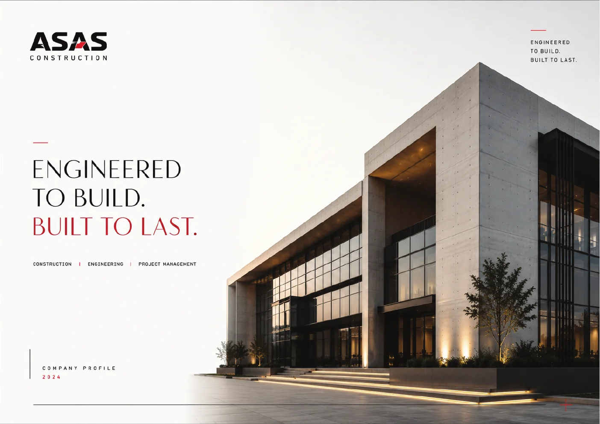

Corporate Systems
ASAS Construction
A structured corporate language built around architecture, clarity and repeatable communication.

Challenge
Translate a construction brand into a modern corporate presence that feels precise, credible and scalable across long-form and campaign applications.
Approach
A modular editorial grid, restrained architectural imagery and a controlled red accent create a visual system that can expand without losing hierarchy.
Company profileEditorial grid systemCorporate communicationArchitecture-led art direction